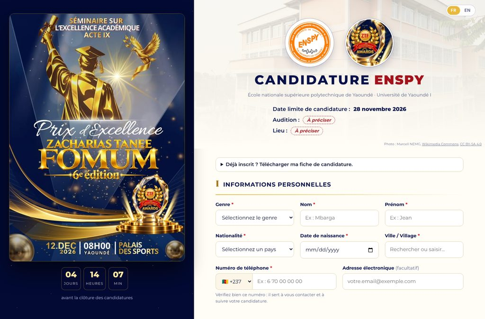
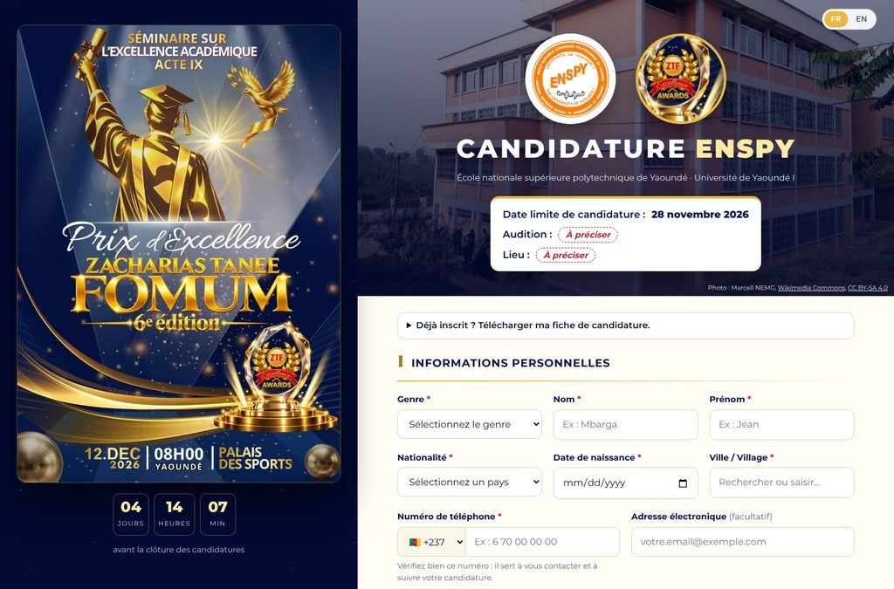
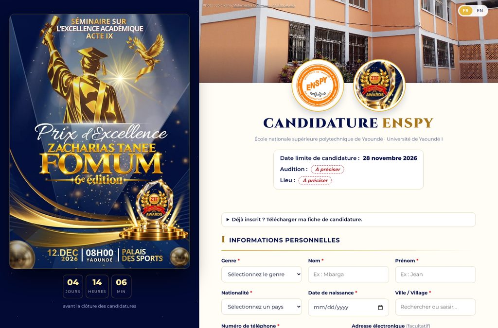
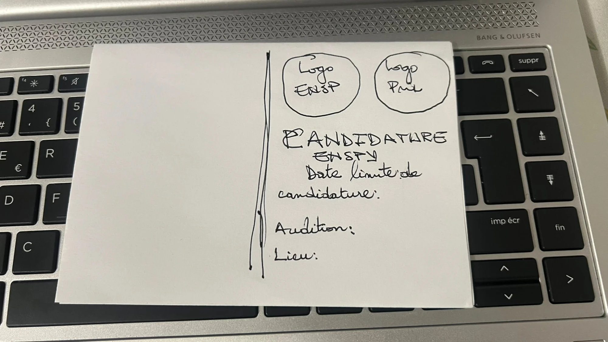

1. Croquis
Le croquis tel quel, en haut du formulaire : les deux logos côte à côte, « CANDIDATURE ENSPY », puis date limite, audition et lieu, sur la photo du bâtiment voilée de crème.
Aperçu téléphone →

2. Bandeau photo
Même ordre, sur la photo sous un voile bleu nuit ; date limite, audition et lieu sur une carte blanche bordée d'or.
Aperçu téléphone →

3. Photo en haut
La photo en couleurs naturelles (bâtiment des travaux dirigés), les deux logos posés sur son bord, le texte sur fond clair en dessous.
Aperçu téléphone →

4. Couleurs de l'école
Photo en noir et blanc, « ENSPY » en grand dans l'orange du logo de l'école, texte aligné à gauche. Chaque école aurait sa couleur.
Aperçu téléphone →

5. Gala
Dans l'esprit de l'affiche de gauche : paillettes, anneaux dorés autour des logos, « Candidature » en script, « ENSPY » en capitales dorées.
Aperçu téléphone →
À savoir

- Audition et lieu ne sont pas encore connus : la page affiche « À préciser » (« To be announced » en anglais) jusqu'à ce que la Fondation les communique.
- Logo du prix : provisoire, c'est le trophée « ZTF Excellence Awards » découpé dans le flyer.
- Photos : Wikimedia Commons, licence CC BY-SA 4.0 ; l'auteur est cité sur la page, en haut à droite. Logo ENSPY : fichier de Commons repris de polytechnique.cm ; mieux vaut obtenir l'accord de l'école avant la mise en ligne. Détail dans img/SOURCES.md.
- Le nouvel en-tête remplace « Prix d'Excellence Zacharias Tanee Fomum » et le bandeau « Postuler jusqu'au… » du site ; le bouton FR / EN reste en haut à droite.
- Sur téléphone, l'affiche passe au-dessus, comme sur le site actuel, puis vient l'en-tête de l'école.
- FR / EN : le bouton en haut du formulaire traduit aussi l'en-tête de l'école. En bas à gauche, « Maquette · pré-remplir » remplit un dossier fictif ; l'envoi est simulé.